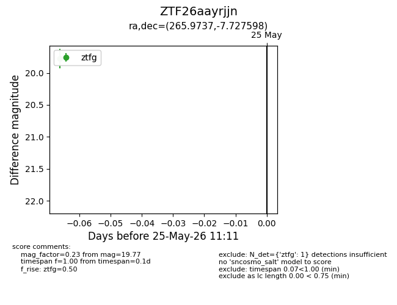
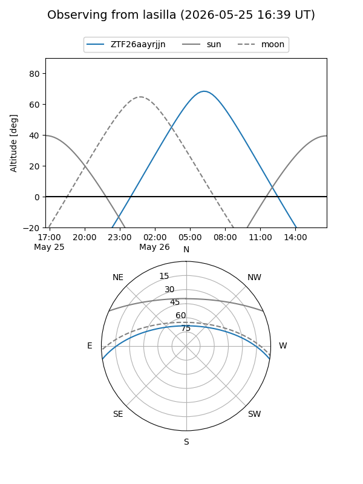
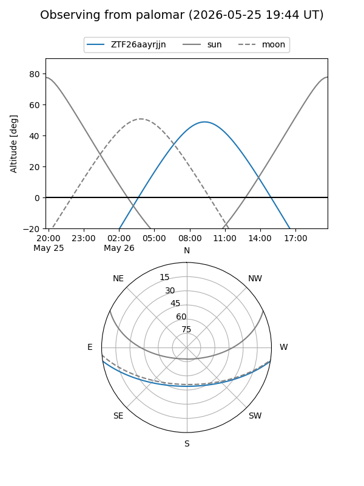

ZTF26aayrjjn
Target ZTF26aayrjjn at 2026-05-25 11:13
Aliases and brokers:
lsst-FINK: link
lsst-Lasair: link
lsst-ALeRCE: link
ztf-FINK: link
ztf-Lasair: link
ztf-ALeRCE: link
alt names
ZTF26aayrjjn (ztf,fink_ztf)
Coordinates:
equatorial (ra, dec) = 265.9737,-7.72760
equatorial (HMS+DMS) = 17:43:53.69,-07:43:39.35
galactic (l, b) = (18.1098,+11.23590)
Flags:
Photometry:
last ztfg=19.77
1 ztfg detections
Lightcurve

Visibility


Additional plots